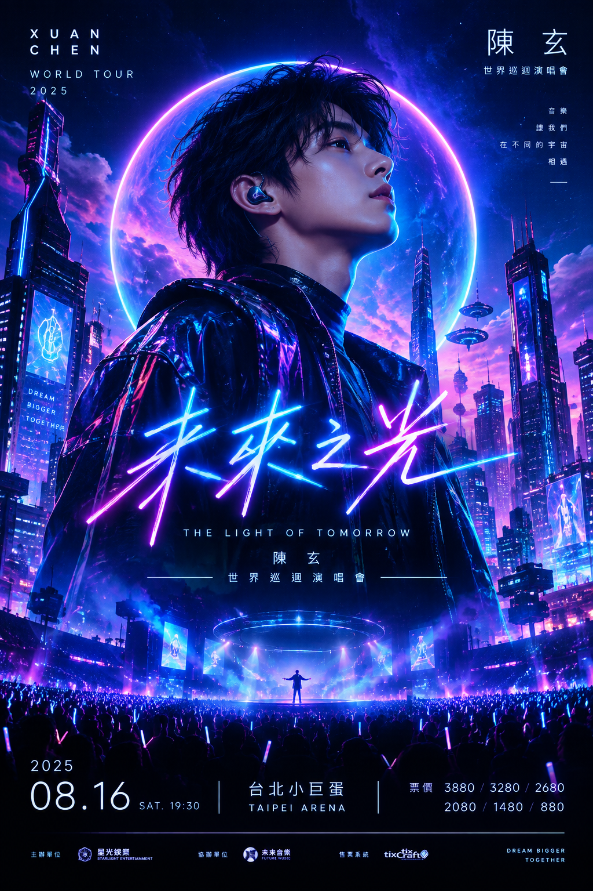
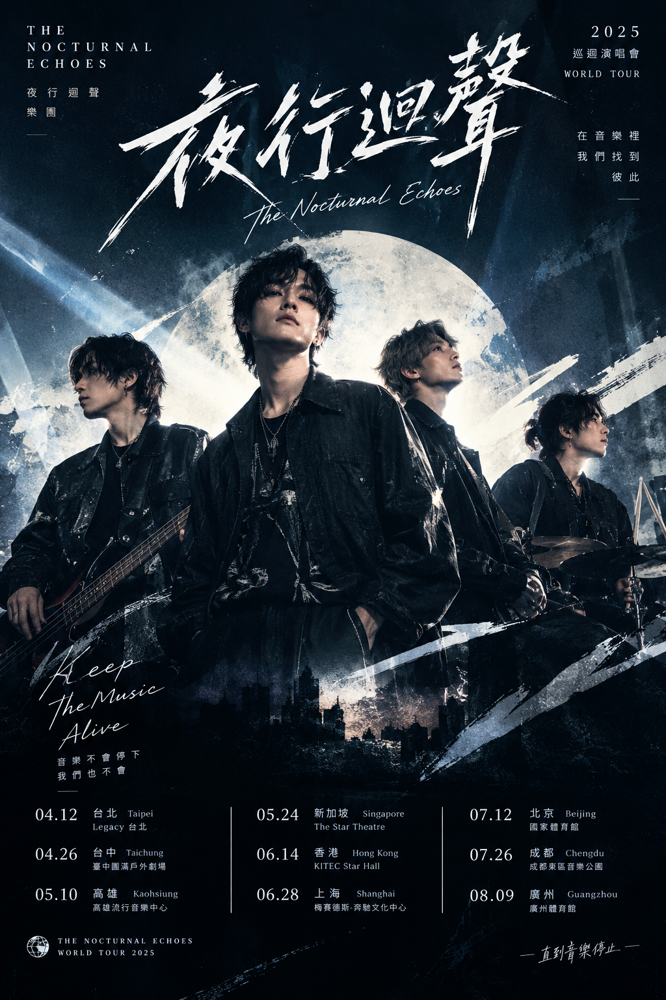
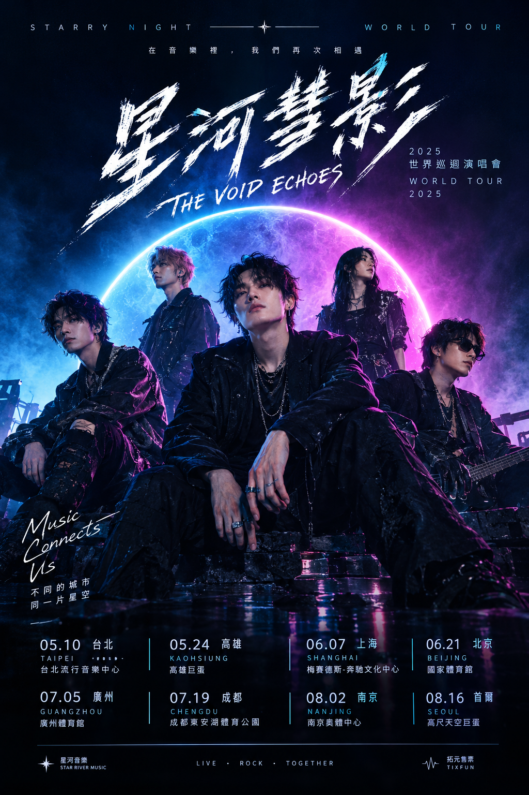

林澈
主唱 · 吉他
把沉默唱成遠方
往下探索01 / OUR STORY

我們把城市凌晨的聲音，寫成可以一起唱的歌。
夜行迴聲從一間深夜排練室開始。四個不同方向的人，用搖滾的骨架、合成器的微光，記下那些說不出口的心事。每一場演出，都是一次重新相遇。
認識團員02 / THE BAND
台上是默契，台下是四個還在為下一首歌爭論的人。

主唱 · 吉他
把沉默唱成遠方吉他 · 合成器
總在夜裡寫 riff貝斯
低頻裡的定心丸鼓手
替每段旅程打拍子03 / ON THE ROAD
四座城市，四個夜晚。把耳機裡的歌，留到現場一起唱。
THE NOCTURNAL ECHOES
城市的夜晚，將由我們共同點亮。
TAIPEI 台北
台北流行音樂中心
售票資訊即將公布
TAICHUNG 台中
Legacy Taichung
售票資訊即將公布
KAOHSIUNG 高雄
高雄流行音樂中心
售票資訊即將公布
HONG KONG 香港
亞洲國際博覽館
售票資訊即將公布
04 / FIRST LISTEN
〈凌晨以後〉是一封寫給還不想睡的人們的信。戴上耳機，從第一個音符開始。
試聽片段 · 瀏覽器合成示範音色
本頁以瀏覽器合成音色製作互動示範；正式歌曲音檔尚未提供。